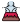

<nz-layout class="app-layout">
  <nz-sider class="menu-sidebar"
            nzTheme="light"
            nzCollapsible
            nzWidth="256px"
            nzBreakpoint="md"
            [(nzCollapsed)]="isCollapsed"
            [nzTrigger]="null">
    <div class="sidebar-logo">
        
    </div>
    <ul nz-menu nzTheme="light" nzMode="inline" [nzInlineCollapsed]="isCollapsed">
      <li nz-submenu nzOpen nzTitle="dashboard" nzIcon="laptop">
        <ul>
          <li nz-menu-item nzMatchRouter>
            <a routerLink="/seller/GetSellers">Obtener Empleados</a>
          </li>
          <li nz-menu-item nzMatchRouter>
            <a routerLink="/seller/Seller">Empleado</a>
          </li>
          <li nz-menu-item nzMatchRouter>
            <a routerLink="/seller/CreateSellers">Crear Empleado</a>
          </li>
        </ul>
      </li>
    </ul>
  </nz-sider>
  <nz-layout>
    <nz-header>
      <div class="app-header">
        <span class="header-trigger" (click)="isCollapsed = !isCollapsed">
            <i class="trigger"
               nz-icon
               [nzType]="isCollapsed ? 'menu-unfold' : 'menu-fold'"
            ></i>
        </span>
      </div>
    </nz-header>
    <nz-content>
      <div class="inner-content">
        <router-outlet></router-outlet>
      </div>
    </nz-content>
  </nz-layout>
</nz-layout>
